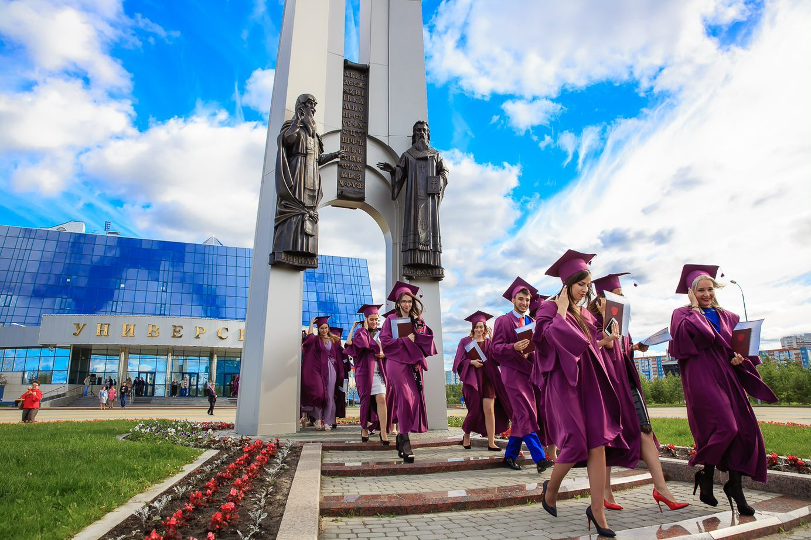

uwu вуз
А. Сургутский государственный университет – один из ведущих и крупнейших вузов Ханты-Мансийского автономного округа – Югры. Сургутский государственный университет был основан 26 мая 1993 года как первый классический университет в нашем регионе. Сегодня Сургутский государственный университет стал значимым научным, образовательным и культурным центром Сургутского района и области в целом.

Б. В состав Сургутского государственного университета сегодня входят 6 институтов: Медицинский, Политехнический, Гуманитарно-спортивный, Институт государства и права, Институт естественных и технических наук, Институт экономики и управления. Научно-исследовательский комплекс университета включает в себя десятки специализированных лабораторий, научно-исследовательских центров, инновационную инфраструктуру и научную библиотеку. СумГУ размещается в 5 благоустроенных учебных корпусах. Кампус университета включает в себя 3 благоустроенных общежития для студентов и сотрудников.
C. Высококвалифицированный профессорско-преподавательский состав Сургутского государственного университета включает 600 лекторов; среди них около 110 докторов наук и педагогических наук и около 300 доцентов, кандидатов наук. Около 9000 студентов получают высшее образование в СумГУ.
D. Образовательный план университета предусматривает академические программы для получения степеней бакалавра и магистра. Студенты имеют возможность получить очное или заочное обучение. Дипломные программы направлены на развитие практических, научных и языковых навыков. Студенты могут получить значительные карьерные перспективы в выбранной отрасли или профессии. Сургутский государственный университет также предлагает аспирантуру по различным специальностям для аспирантов и молодых ученых.
Сургутский государственный университет им. Э. дает возможность своим выпускникам получить Сертификат переводчика английского языка в сфере профессиональной коммуникации, что может очень пригодиться в их будущей карьере. Преподаватели и студенты Сургутского государственного университета имеют прекрасную возможность изучать иностранные языки и сдавать международные языковые экзамены в университетском Центре языкового тестирования. Здесь студенты также могут найти информацию о различных образовательных программах обмена.
F. Научная библиотека университета содержит более 400 тысяч томов академической литературы. Это крупнейший региональный ресурсный центр. 9 читальных залов библиотеки вмещают одновременно около 520 человек. Здесь преподаватели и студенты имеют возможность пользоваться интернет-ресурсами, посещать онлайн-библиотеки по всему миру, находить много информации для научных исследований, читать редкие книги и журналы.
G. Ежегодно в Сургутском государственном университете проходят международные и региональные конференции, семинары и мастер-классы. Ученые Сургутского государственного университета реализуют большое количество федеральных и региональных научных проектов. Ежегодно ученые публикуют до 30 монографий, тысячи статей, докладов и тезисов в различных областях наук: математике, физике, биологии, экологии, медицине, механике, информационных технологиях, психологии, лингвистике, теории образования, истории и политике, Право, экономика и управление, физическая культура и туризм.
H. Обширная спортивная база университета дает возможность студенческим спортивным командам тренироваться и соревноваться в спорткомплексе «Дружба» и плавательном бассейне «Водолей». Сургутский государственный университет – это не только место академической учебы, но и место творческого развития личности. Например, Дебатный клуб «Спикер» помогает студентам улучшить разговорную речь и soft skills. В СумГУ действует уникальный студенческий театр, в котором выступают различные творческие коллективы, танцевальные коллективы, театры моды и пластики. Ежегодно здесь проходит множество интересных мероприятий, например, «Дебют первокурсников», городской и областной студенческий фестиваль «Студенческая весна», «Фестиваль спорта» и др. Сургутский государственный университет имеет свои собственная эмблема, гимн и девиз: "ДУМАЙ! ДЕЛАЙ! ДОСТИГАЙ!"
В заключение, обучение в Сургутском государственном университете – это получение хорошего образования и высокой квалификации для успешной будущей карьеры!